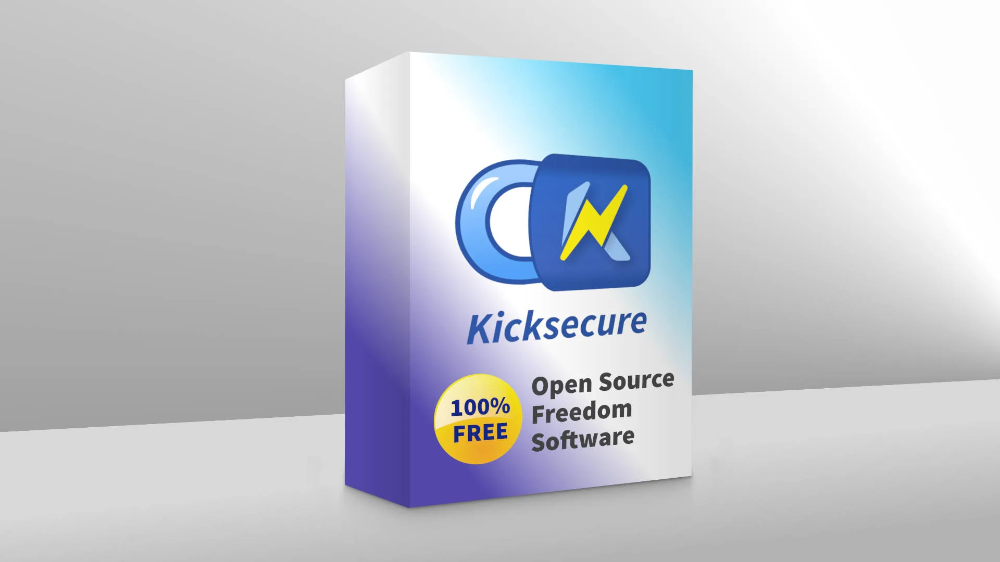
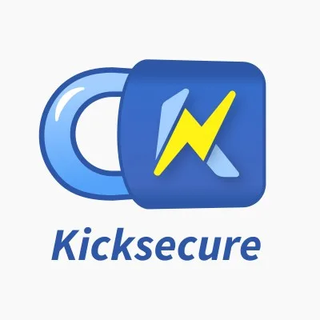
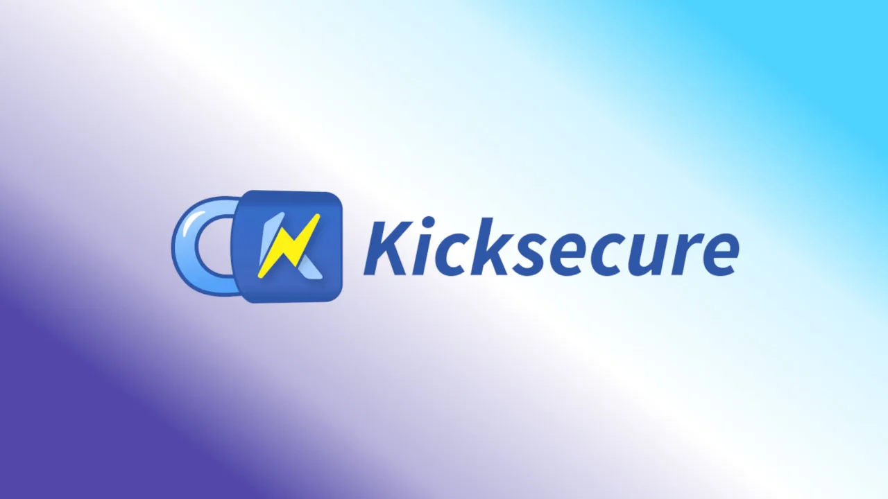

We believe security software like Kicksecure needs to remain Open Source and independent. Would you help sustain and grow the project? Learn more about our 14 year success story and maybe DONATE!
Kicksecure Unified Design - Logos & Guidelines
Kicksecure logo
Kicksecure Project logos, profile images and banners. Graphics can be found on this page. Kicksecure Unified Design: To give Kicksecure a unified design we maintain profile, banner and post images, tailored towards different platforms. On this page guidelines are declared and gathered, for all images, but also for the general Kicksecure Unified Design elements like text.
Definitions
Kicksecure Unified Design Logos are subdivided into:
- Standard Logo: The base form of the image representing the whole project, often squared or almost squared.
- Landscape Logo: A wide version of the Standard Logo where the width is min 2:1 ratio of width to height
- Text Logo: A textform version of the Standard Logo which could be used in a text paragraph. Can be identical with Landscape logo if this is wide
- Icon Logo: A simplified version of the Standard Logo for cases where the logo needs to be very small. If the logo is already very simple this might be identical to basic Logo
Use cases where Kicksecure logos will be typically used are:
- Profile Image: On various platforms there will usually be profile images which are used to identify the user. In most cases a square image will which be displayed as a square or a circle
- Banner Image: On platforms there will mostly be the option to decorate your profile with a banner image. This image is often wide with a 3:1 ratio or more
- Post Image: To create posts about Kicksecure there will be an image needed to represent Kicksecure as an OS as a whole. These images of often around a 16:9 ratio
- Favicon Image: To identify your page in a Browser there are very small images called favicons displayed in the browser tab before the text. Those images are squared, very small, eg 64x64px or 32x32px and can have transparency
Guidelines
- Generally the images referenced in this page should be used on the different platforms. New images should be agreed upon with the Kicksecure team
- The word "Kicksecure" in text is always used with a starting uppercase letter. Only in the logos this might vary.
- Name structure for Logo images - apply only to
images that fit one of the logo definitions above:
Kicksecure-logo-definition.bmp, for exampleKicksecure-logo-standard.svg - Name structure for graphical components - apply
only to graphical components (see chapter) that are used as parts to
create other images:
Kicksecure-component-description.bmp, for exampleKicksecure-component-background.jpg - Name structure for other images - apart from logos
and graphical components other images should be named by the use case
like so:
Kicksecure-image-usecase.bmp, e. g.Kicksecure-image-twitter-profile.jpg
Current Kicksecure graphical components
These graphical components are images or image components that can be used, combined and altered to create new Kicksecure images for the specific use cases, namely for banners, profile and post images on varios platforms.
- Note: The last image is the background plate, currently in use for the banners.
- Note: Most files are in
svgformat. Oftenpngformat is available too by simply replacingsvgwithpngin the browser URL bar. However, usingsvgshould be preferred.
 Kicksecure
Text
Logo
Kicksecure
Text
Logo Kicksecure
Rectangular Logo without
TextKicksecure
Rectangular Logo with
Text
Kicksecure
Rectangular Logo without
TextKicksecure
Rectangular Logo with
Text Kicksecure
Icon
Logo
Kicksecure
Icon
Logo Kicksecure
SealBasic
Background
Kicksecure
SealBasic
Background
Platform Guidelines
Facebook 2021
Profile image is called Profile picture on Facebook, Banner image is called Cover photo on Facebook. Help: https://www.facebook.com/help/125379114252045/
Your Page's profile picture:
- Displays at 170x170 pixels on your Page on computers, 128x128 pixels on smartphones and 36x36 pixels on most feature phones.
Your Page's cover photo:
- Displays at 820 pixels wide by 312 pixels tall on your Page on computers and 640 pixels wide by 360 pixels tall on
- Must be at least 400 pixels wide and 150 pixels
- Loads fastest as an sRGB JPG file that's 851 pixels wide, 315 pixels tall and less than 100 kilobytes.
Kicksecure post images on Facebook should be Open Graph compatible.
This is required for facebook share.
[ <img src="../../media/Twitter-share-button.png.webp"
width="60" height="19" alt="Twitter-share-button.png" /> <img
src="../../media/Facebook-share-button.png.webp" width="60" height="19"
alt="Facebook-share-button.png" /> <img
src="../../media/Telegram-share.png.webp" width="55" height="20"
alt="Telegram-share.png" />]
https://developers.facebook.com/docs/sharing/webmasters/images
The og:image tag can be used to specify the URL of the image that appears when someone shares the content to Facebook. The full list of image properties can be found here. Requirements
- The minimum allowed image dimension is 200 x 200
- The size of the image file must not exceed 8 MB.
- Use images that are at least 1200 x 630 pixels for the best display on high resolution devices. At the minimum, you should use images that are 600 x 315 pixels to display link page posts with larger images.
Twitter 2021
Profile images on Twitter are also called profile images, banner images are called header images. Help: https://help.twitter.com/en/managing-your-account/common-issues-when-uploading-profile-photo
Check the dimensions. Recommended dimensions for profile images are 400x400 pixels. Recommended dimensions for header images are 1500x500 pixels.
Post images on Twitter are called 'Images in Tweets. Help: https://developer.twitter.com/en/docs/twitter-for-websites/cards/overview/summary-card-with-large-image
A URL to a unique image representing the content of the page. You should not use a generic image such as your website logo, author photo, or other image that spans multiple pages. Images for this Card support an aspect ratio of 2:1 with minimum dimensions of 300x157 or maximum of 4096x4096 pixels. Images must be less than 5MB in size. JPG, PNG, WEBP and GIF formats are supported. Only the first frame of an animated GIF will be used. SVG is not supported.
Current Use Case Images
BIMI
Kicksecure BIMI Icon Logo (non-compliant BIMI)Kicksecure BIMI Icon Logo (compliant BIMI)
Kicksecure
facebook
banner  Kicksecure
facebook post
Kicksecure
facebook post
Kicksecure
twitter
bannerKicksecure
twitter
profile 
Github
Kicksecure github profile
resized
Next
Successful project logos?
Which logos can you remember and paint in your mind?
Look up logo history of big brands.
https://www.youtube.com/watch?v=A-G0v3eBbdk
Follow size convention or standard if any.
File Name advancedsettings.ico
Image Width 128
Image Height 128
File Name chat.png
Image Width 128
Image Height 128
File Name contribute.png
Image Width 128
Image Height 128
File Name donate.png
Image Width 32
Image Height 32
File Name featureblog.ico
Image Width 128
Image Height 128
File Name firewall.png
Image Width 256
Image Height 256
File Name forum.ico
Image Width 48
Image Height 48
File Name importantblog.png
Image Width 128
Image Height 128
File Name important.png
Image Width 128
Image Height 128
File Name Kicksecure-logo-standard.svg
Image Width 40mm
Image Height 133.988
File Name {{project_name_short}}-logo-icon.svg
Image Width 40mm
Image Height 40mm
File Name Kicksecure-logo-rectangle.svg
Image Width 100mm
Image Height 100mm
File Name Kicksecure-logo-text.svg
Image Width 125mm
Image Height 25mm
File Name mailinglist.ico
Image Width 128
Image Height 128
File Name nerolinux.ico
Image Width 128
Image Height 128
File Name nyx.ico
Image Width 256
Image Height 160
File Name power_restart.ico
Image Width 128
Image Height 128
File Name quick_restart.ico
Image Width 128
Image Height 128
File Name readme.ico
Image Width 128
Image Height 128
File Name restart.ico
Image Width 128
Image Height 128
File Name Saki-NuoveXT-2-Actions-stop.ico
Image Width 128
Image Height 128
File Name secbrowser.png
Image Width 256
Image Height 256
File Name tbupdate.ico
Image Width 128
Image Height 128
File Name text_x_makefile.ico
Image Width 128
Image Height 128
File Name timesync.ico
Image Width 256
Image Height 256
File Name torbrowser.png
Image Width 64
Image Height 64
File Name whonix.ico
Image Width 32
Image Height 31
File Name whonixlock.png
Image Width 185
Image Height 250
File Name Whonix-logo-bimi.svg
File Name Whonix-logo-icon.svg
Image Width 500pt
Image Height 500pt
File Name Whonix-logo-rectangle.svg
Image Width 50mm
Image Height 50mm
File Name Whonix-logo.svg
File Name whonix.png
Image Width 500
Image Height 487
File Name Kicksecure-logo-standard.svg
Image Width 40mm
Image Height 133.988
File Name {{project_name_short}}-logo-icon.svg
Image Width 40mm
Image Height 40mm
File Name Kicksecure-logo-rectangle.svg
Image Width 100mm
Image Height 100mm
File Name Kicksecure-logo-text.svg
Image Width 125mm
Image Height 25mm
File Name Whonix-logo-bimi.svg
File Name Whonix-logo-icon.svg
Image Width 500pt
Image Height 500pt
File Name Whonix-logo-rectangle.svg
Image Width 50mm
Image Height 50mm
File Name Whonix-logo.svg
ExiftoolSee Also
Categories: Development